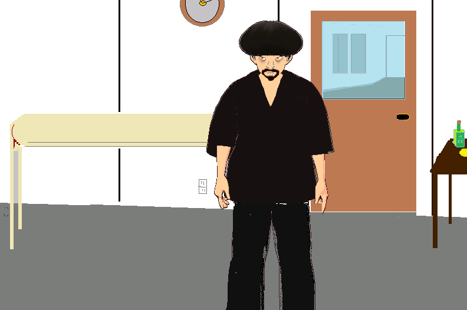

This is a game for browsers centered on the Glest Universe. This new version comes with a twist, tokenomics rather than gold-based societies. It is played free in a browser like Safari or IE. You just need to decompress first. No ads.
Data Centers Owned
Crypto Available
Each data center costs 100 tokens to build
STATUS
Before we can play, help moi rack these billiard balls, won't vous, old chum? -Pool Shark
Instructions: Grab the billiard balls as Sharkie slides them down the felt to vous. Careful, do not grab the other stuff, only the billiard balls. Once you collect enough of them and we cue the balls the game can begin. Right, mate?
Ball Count:

You ladies have everything? Ready to cast off for Mississippi? -Pom Squad Member
THE "GREEENPEACE OCEAN DELITE"
Nancy Grace: Welcome aboard, all yall! I am tickled pink that you all are willing to lend a hand on this case. How do yall like this vessel? It is owned by Greenpeace and operated by the United Cajun Navy. I just love it. Who wants some sweet tea? I could really go for a vegan Vienna snausage und a small soy Milch, ja? Et vous? Where is the cabin boy?
Level 3
Nancy Grace: Hey all yall! How yall been? I had to record a live shoot but ich bin back, ja? Now that we are away from the North, down here in the dirty, dirty South, I am curious as to your thoughts on the Nolan Wells case? I now you were involved with the search and rescue, oui? Are you not the person who found the body? So, I think he drowned right then when the boat left as if it was an argument and they left him when he asked for the phone and he drowned but I cannot be sure. The girl could be lying or anything could have happened really. But, the lack of the vic asking anyone for a ride and the way he seems to have disappeared right when the boat steamed off makes me think they drove off and he drowned. So, we need to interview some more wits and go see the DA first thing, ja?
Your thoughts?
--LEVEL 3 COMPLETE--
Start Level 4
Current Location: Biloxi, Mississippi Waterfront
Biloxi, Mississippi
7:23 am | 🌡 97 degrees F
Cheerleader Jyotishna - Well, sahib..here we are in Biloxi but where did Nancy go and where are our horses and luggage? Yall have any idea, mon ami? Orale, bato. Anyway, while we wait for Nancy let us head over to the taxi stand there across the river, see it? She said to wait for her there, remember? She was planning to stop in at the Hari Krishna Temple to grab some vegan grub and then we are heading to the stables to check on our horses, ja?
MOLLY's IRISH PUB
Bartender: Nancy Grace left a message for you. She was here 5 minutes ago. She wants you and your entourage to meet her in Atlanta at the new vegan cafe inside the Ultimate Frisbee Arena. Here, take this note.
MEMO
Mademoiselle, it is I, Nancy. My dear, I have gone undercover at the Indoor Ultimate Frisbee tournament in Atlanta. I am disguised as a veggiedog vender on the second level. Come see me won't you? If you can though, I need you to take on the character we discussed, Helga Schmidt from Dusseldorf. You are a veggiedog trade show attendee in the scenario. Ask around for a guy named Charlie from New Orleans. Ciao. -NG
🏟 Ultimate Frisbee Arena
Semi-Pro Ultimate Frisbee Player - Your name is Helga? Nancy Grace sent us. She said du bist working mit ihr on a case. Well, I am Mamoud and this is Raj. Where are you from Helga? Ja, we were in Biloxi on the 4th of July, Raj and I. We visited Horn Island and saw the fight but we didn't see any murder or drowning. It was as if they left him on purpose and then he drowned right then trying to get his phone and that is why Katie thought he left with the boat. The friends said they called and checked up on him through the night but that can't be because nobody saw him after 6pm and he didn't ask anyone for a ride. As if the 6pm witnesses are mistaken and he drowned right then around 4pm walking out after the boat and stepped in pit.
What part of Dusseldorf du bist from?
Well, where did those guys go that wanted sess? Awww, gee wiz. I guess when I stopped to take a dump and went to the liquor store I took too long and they found some other floosie. Shucks, man. Well, let's go pick up that ticket from Amtrak and find out when the train departs. I can always bang some dudes on Amtrak, you just sit in the very back of the train, last row. That's the sess place.
Lexington, Cantuck
Honky Boy - Yeehaw! Look how I can ride! Yeehaw! Don't worry, I won't spook your horse. I'm not bothering you. Yeehaw, yeehaw! Are you new to this farm? What's your name? I'm from Kentucky.
Fellow Cheerleader - Doctor, vous simply must tell me. You have a patient here, Helga Schmidt from Dusseldorf. Will she recover?
Doctor - Ah, oui. Do not worry. She is getting rest. She may never walk again, however. Nancy Grace was her to see her yesterday with a camera crew. Now, I must go. Adieu.
Doctor - Yes, it is true yall. I was on Horn Island for 4th of July and I saw Mr. Wells there all yall. But, I didn't kill him. I simply saw him there and there was the fight and the friends left suddenly when some Mexican guys showed up with guns speaking Spanish and playing mariachi music. The friends didn't give him his phone which is not the Southern tradition but it was probably because of the Mexican gang-bangers, they are a gay gang. They were having sex on the beach. Everyone thought he left with the boat Mack Daddy because he didn't ask anyone for a ride. Anything you want to know?
FINAL REPORT
Enter your report here for Nancy Grace and her team. It is overdue, we need to get this done.
CASE 20494593-D
Nolan Wells
FINDINGS
Your Badge #
Horse's Name
AccidentMurder 1
Friends killed him
Accident, no fault
Was supplied alcohol
Victim was abandoned
Victim was provided alcohol and then left in a dangerous place and situation
Filing charges recommended
A stranger killed victim
Victim sought a ride with other boat
Victim was not seen by Katie after 4pm
Victim drowned just as the Mack Daddy left
Victim asked for phone
Victim followed boat as it abandoned him and fell in a hole.
People on the boat saw him go down.
Rocks were thrown at the victim by his friends.
Victim was in a fight over someone abusing a girl verbally.
Football and organized religion leads to violence and irresponsible actions.
Victim knew Jesus is just a peach
Victim was vegan
Group on Mack Daddy not vegans
Food was served on Horn Island by the hosts
Very little food eaten July 4 on Horn Island by victim and his group.
Proper sun protection was used July 4
Victim died from sunstroke
Suicide
Body was placed in artificial location by wrong-doers
Mack Daddy looks like a ratty boat and not sea worthy
Victim's friend group involved in brawling and partying. Not a studious bunch.
Not many positive character references have surfaced for suspects or victim
Victim should have never gone to an island if he knew meat-eaters would be there
Vegetarians must keep 22 metres away from meat-eaters for safety's sake
It was a hate crime. Anti-vegan activity.
Suspects were wearing crosses at the time of disappearance as in KKK crosses (see onboard photo).
Mexican illegal immigrants killed Nolan
Peruvian illegal immigrants killed Nolan
Other South American illegal immigrants killed Nolan
Central American illegal immigrants killed Nolan
Mexican legal immigrants killed Nolan
Mexican-Americans killed Nolan
Mexicans arranged for Nolan's death
The phone tap on Stanley McFadden's phone line is very productive and we have located several missing teen girls. The top underage sex brothels now under investigation: Harbor Signo Y Sex, 850 N Union St, 95205 (en el bano) and Taco Y Culito Sess, 822 E Miner St (in trailer) along with Park and Blow at 820 N. Union Street "en la oficina". Stanley McFadden is part-owner. Other key child sex trafic depot:
1770 Iowa Ave. #240
Riverside, CA 92507
Tel: 951.788.0100
Fax: 951.788.5785
bkosla@bswlaw.com
Cheryl VanLancker, Recruiter
Martin Kosla, Pimp
This underage sex brothel located in Riverside is a favourite of Greg Laurie, a big customer for sex workers and local resident.
Stay tuned for more updates and SEMPER FI!
For tips: Call Irma Clay or stop by her restaurant in downtown Stockton near McFadden's oficina.
-Jose